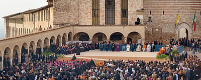

El pacifismo es el conjunto de doctrinas encaminadas a mantener la paz entre las naciones. Se opone a la guerra y a otras formas de violencia a través de un movimiento político, religioso, o como una ideología específica. Algunos de los medios de los que se vale el pacifismo en la búsqueda de sus fines son: la no violencia activa, la diplomacia, la desobediencia civil, el boicot, la objeción de conciencia, las campañas de divulgación y la educación por la paz.
Por pacifista se puede entender toda corriente de pensamiento y acción que aspira a hacer posible las condiciones para que la ausencia de guerra sea un estado permanente de las relaciones humanas, tanto entre los Estados, naciones y pueblos como entre las personas.
